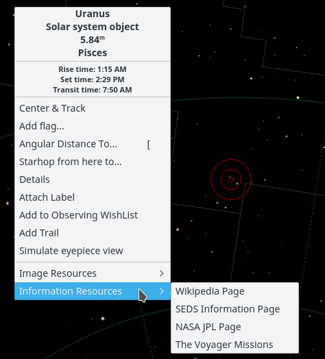
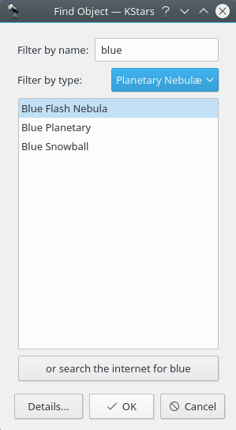
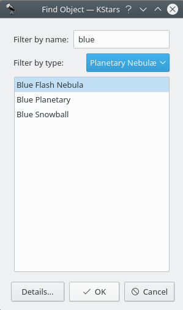

Objects in the Sky
KStars displays thousands of celestial objects: stars, planets, comets, asteroids, clusters, nebulae and galaxies. You can interact with displayed objects to perform actions on them or obtain more information about them. Clicking on an object will identify it in the status bar, and simply hovering the mouse cursor on an object will label it temporarily in the map. Double-clicking will recenter the display on the object and begin tracking it (so that it will remain centered as time passes). Right clicking an object opens the object's popup menu, which provides more options.
The Popup Menu
Here is an example of the right click popup menu, for the Uranus:

The appearance of the popup menu depends somewhat on the kind of object you right-click on, but the basic structure is listed below. You can get more detailed information about the popup menu.
The top section contains some lines of information which are not selectable: the object's names ("Uranus"), object type ("Solar system object"), and the constellation which contains the object ("Pisces"). The next three lines show the object's rise, set, and transit times. If the rise and set times say "circumpolar", it means that the object is always above the horizon for the present location.
The middle section contains actions which can be performed on the selected object, such as Center & Track, Details, and Attach Label. See the popup menu description for a full list and description of each action.
The bottom section contains links to images and/or informative webpages about the selected object. If you know of an additional URL with information or an image of the object, you can add a custom link to the object's popup menu. Use the Details item in the popup menu to open the Object Details dialog. On the Link tab use the Add Link... item.
Finding Objects
You can search for named objects using the Find Object tool, which can be opened by clicking on the search icon in the toolbar, by selecting Find Object... from the Pointing menu, or by pressing Ctrl+F. The Find Object window is shown below:

The window contains a list of all the named objects that KStars is aware of. Many of the objects only have a numeric catalog name (for example, NGC 3077), but some objects have a common name as well (for example, Whirlpool Galaxy). You can filter the list by name and by object type. To filter by name, enter a string in the edit box at the top of the window; the list will then only contain names which start with that string. To filter by type, select a type from the combo box at the bottom of the window.
KStars provides another method for resolving the objects that are missing from any of its predefined catalogues, by using an internet connection. Thus, if you want to find an object that KStars is not aware of, you can easily do this by querying several professional astronomical databases as: SIMBAD, NED or VizieR. This can be done by entering the object's name and then press the or search the internet for ObjectName button. After your object is found, you can use it exactly as any object that is already loaded into KStars (i.e. adding it to the Observing WishList). If the object was not found in the online databases, then a warning dialogue will pop-up. Once you resolve an object by using this method, it is stored in KStars database, so if you close KStars and open it again, your object will still be there.
You can choose to enable or disable this feature by checking or unchecking the Resolve names not known to KStars using online services check box from Catalogs tab, inside of Settings → Configure KStars window. If this checkbox is checked, when an object name unknown to KStars is entered in the Find Dialog, KStars will contact online services to learn about the desired object and then add it directly to KStars database. The objects acquired in this manner are stored in a fake catalog, called “_Internet_Resolved”. Thus, you can enable or disable the display of these objects by checking or unchecking the “_Internet_Resolved” catalog from the catalogues list. Note that you can not delete this fake catalogue, as you can do with a custom catalogue. If this checkbox is unchecked, then the Find Dialog window will be exactly the same, excepting a minor change: the online searching button will no longer be visible.

To center the display on an object, highlight the desired object in the list, and press Ok. Note that if the object is below the horizon, the program will warn you that you may not see anything except the ground (you can make the ground invisible in the Guides settings page, or by pressing the Ground button in the View toolbar).
Centering and Tracking
KStars will automatically begin tracking on an object whenever one is centered in the display, either by using the Find Object window, by double-clicking on it, or by selecting Center & Track from its right-click popup menu. You can disengage tracking by panning the display, pressing the Stop Tracking icon in the Main toolbar, or selecting Stop Tracking from the Pointing menu.
Keyboard Actions
When you click on an object in the map, it becomes the selected object, and its name is identified in the statusbar. There are a number of quick key commands available which act on the selected object:
- C
- Center and Track on the selected object
- D
- Show the Details window for the selected object
- L
- Toggle a visible name label on the selected object
- O
- Add the selected object to the Observing wish-list
- T
- Toggle a visible curve on the sky, showing the path of the object across the sky (only applicable to Solar System bodies)
|
|
Note |
|
|
By holding down the Shift key, you can perform these actions on the centered object, rather than the selected object. |
Created with the Personal Edition of HelpNDoc: Benefits of a Help Authoring Tool